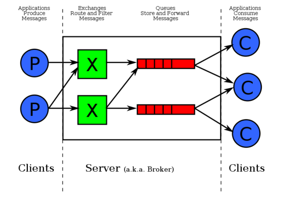

Programming Languages & Concurrency
Scaling from single-core to multi-core to multiple hundreds of cores.
UOIT, 2016
Elements of Computation
CPU as a function.
Memory as persistent state.
Programming languages are designed to communicate:
Types: Format and interpretation of memory content.
Expressions: Description of computations to be carried out.
! Today, we will examine the expressions that support concurrent programming.
Programming paradigm
Imperative programming:
A programming paradigm that makes the distinction between statements and expressions. Statements modify the state of its runtime environment, while expressions use certain existing values to evaluate another value.
Functional programming:
A programming paradigm that forbiddens modification of existing values. All values are created once, and remain read-only. Functions and data are unified, known as functions as data. State of the runtime is modeled not by data (in the sense of imperative programming), but rather one or more functions.
Modern languages are designed with features supporting both paradigms.
! But what about Object-oriented programming paradigm?
Concurrency
First of all, concurrency is not parallism. 1
What’s the distinction?
Concurrency is about the programming constructs that allow programmers to compose multiple interdependent (but non-sequential) units of computation.
Parallelism is about executing units of computation using multiple interdependent processors.
Parallelism
- Multi-core
- Cluster
- The Internet
Concurrency
- Code constructs (threads, goroutines, channels, futures, promises, async, scatter-gather, …)
- Even single-core, one-process program can be concurrent
Concurrency $\supset$ Parallelism
Concurrency is about programming.
Concurrency is about a way to think.
Concurrent programming is to adapt to the ever increasing parallel runtime environments.
+------------------------+
| Concurrent Programming |
+-----------+------------+
|
+--------------+----------+-----+------------------+
| | | |
| | | |
+----------+ +----------+ +-------------+ +-----------------+
| IPHONE | | ANDROID | | Desktop | | Cluster |
| 2 cores | | 4 cores | | 16-32 cores | | ~500-1000 cores |
+----------+ +----------+ +-------------+ +-----------------+
Concurrent programming
Concurrent programming is not an extention of imperative programming.
Java’s threading model is fundamentally prohibitive from a programmer’s perspective.
Computation & Composition
Composition
let x = f(...)
let y = g(x)
let z = h(y)
Or simply:
let z = h(g(f(...)))
No concurrency.
________________________
Independent computation
let x = f(...)
let y = g(...)
let z = h(...)
We can evaluate f, g and h on separate processors.
spawn { x = f(...) }
spawn { y = g(...) }
spawn { z = h(...) }
_________________________
Partial composition
let x = f(...)
let y = g(...)
let z = h(x, y)
We can evaluate f and g on separate processors, and use the results to
evaluate h.
x = result of spawn { f(...) }
y = result of spawn { g(...) }
wait-for-all(x, y) as (x, y) {
z = h(x, y)
}
____________________________
Partial composition
let x = f(...)
let y = g(...)
let z = x or y
x = result of spawn { f(...) }
y = result of spawn { g(...) }
wait-for-any(x, y) as (u) {
z = u
}
________________________
Transaction
Functions may fail to complete, and result in error.
Transaction:
snapshot() h(g(f(...))) if error: reverse back to snapshot()
transaction {
f()
g()
h()
}
_______________________
Data exchange
- Long running functions that require data from one another mutually recursively.
F() {
get x from G
send x' back to G
...
}
G() {
send x to F
get x' from F
...
}
spawn F()
spawn G()
! We can have multi-way data exchange among multiple long running functions.
Let’s get practical ✌
Multicore
1) Go
2) Clojure
Hundreds of cores
3) RabbitMQ
Go: independent computation
func is_prime(n int64) bool {
for(i := 2; i < n; i++) {
if n % i == 0 {
return false
}
}
return true
}
Compute the 1000th prime number.
func is_perfect(n int64) bool {
var total int64 = 0
for i := int64(1); i < n; i++ {
if n % i == 0 {
total += i
}
}
return total == n
}
Compute the 4th perfect number.
__________________________
func nth_prime(nth int) int64 {
found := 0
var n int64
for n = 2; found < nth; i++ {
if is_prime(n) {
found += 1
}
}
if found == nth {
prime_1000 = n
}
}
ans1 := nth_prime(1000)
Let’s do some refactoring so we can reuse the code for the 4th perfect number.
______________
func look_for(predicate func(int64) bool, nth int) {
found := 0
var n int64
for n = 2; found < nth; i++ {
if predicate(n) {
found += 1
}
}
if found == nth {
return n
} else {
return 0
}
}
__________________
var prime_1000 int
var perfect_4 int
go func() {
prime_1000 = look_for(is_prime, 1000)
}()
go func() {
perfect_4 = look_for(is_perfect, 4)
}()
Clojure: Independent computation
(defn prime? [n]
(every? #(not (zero? (mod n %1))) (range 2 n)))
(defn perfect? [n]
(let [factors (filter #(zero? (mod n %)) (range 1 n))]
(= n (reduce + 0 factors))))
(defn look-for [pred n]
(nth (filter pred (iterate inc 2)) n))
_______________________
(def prime-1000 (future (look-for prime? 1000)))
(def perfect-4 (future (look-for perfect? 4)))
!
(future ...) evaluates the expression in the background. When it’s complete,
the result is saved in the reference.
Partial composition
Problem to solve:
Find the sum of the 1000-th prime and the 4th perfect number.
Solutions:
Goroutine & channels
Clojure futures and deref of futures
Goroutine and channels
- We have already seen goroutines:
go f(...)
- Channels are native type in Go. You can send anything over a channel.
var ch = make(chan int)
! Create a bi-directional channel for exchanging integers.
var i int = <- ch
! Read an integer from the channel. If nothing is in the channel, this will block.
ch <- 42
! Writes an integer into the channel.
______________________________
func computation() int64 {
var ch chan int64 = make(chan int64)
go func() {
p := look_for(is_prime, 1000)
ch <- p
}()
go func() {
q := look_for(is_perfect, 4)
ch <- q
}()
result := (<-ch) + (<-ch)
return result
}
! Line 14. blocks until both prime/perfect numbers are computed.
Clojure’s solution
(def prime-1000 (future (look-for prime? 1000)))
(def perfect-4 (future (look-for perfect? 4)))
(println (+ (deref prime-1000) (deref perfect-4)))
!
deref blocks until the result of the futures are available, and returns the
result.
Here is a more functional style:
(let [a (future (look-for prime? 1000))
b (future (look-for perfect? 4))
result (+ @a @b)]
(println result))
Partial composition
Now, let’s consider a different problem:
Compute either the 1000th prime, or the 4th perfect number.
The strategy is to concurrently evaluate both computations, and as soon as one is done, return it.
Go’s channel selection
select {
case v1 = <- ch1:
...
case v2 = <- ch2:
...
}
!
This tries to read from ch1 or ch2, and it guarantees to read only at most one of
them. If both channels are empty, then default case is evaluated.
Go’s solution using select
func async_look_for(cond func(int64) bool, nth int) chan int64 {
ch := make(chan int64)
go func() {
ch<- look_for(cond, nth)
}()
return ch
}
! Pretty cool. Instead of returning the result, we wrap the result in a channel.
func computation() int64 {
result1 := async_look_for(is_prime, 1000)
result2 := async_look_for(is_perfect, 4)
var answer int64
select {
case answer = <-result1:
case answer = <-result2:
}
return answer
}
! The select { ... } will block until the first prime/perfect number
is computed.
Go’s solution using pure channel operations
func async_look_for(cond func(int64) bool, nth int, results chan int64) {
ch := make(chan int64)
go func() {
results<- look_for(cond, nth)
}()
}
func computation() {
results = chan int64
async_look_for(is_prime, 1000, results)
async_look_for(is_perfect, 4, results)
answer := <-results
close(results)
return answer
}
! We pass a channel into async_look_for to collect their results of
computation. As soon as one result appears in the channel, we are done.
Conclusion for Go:
Channels + Goroutines = Really powerful and universal solution
This is called the Communicating Sequential Processes (CSP)
Clojure’s CSP
(require '[clojure.core.async :as async :refer :all])
(go ...)
! Starts a go-routine.
(chan)
! Constructs a bi-directional channel.
(<! ch)
! Read one value from the channel. It blocks in the go-routine.
(>! ch x)
! Writes one value into the channel.
(close! ch)
! Closes the channel.
Clojure’s solution - using alt!
(let [[val ch] (alt! [ch1 ch2 ...])]
...)
! alt! blocks until one of the channels receives some value.
Returns the value and the channel it comes from.
There are two version:
alt!is used in a go-routine.alt!!is used in the context of an actual thread.
___________________
(defn async-look-for [pred n]
(let [ch (chan)]
(go (>! ch (look-for pred n)))
ch))
(defn computation []
(let [ch1 (async-look-for prime? 1000)
ch2 (async-look-for perfect? 4)]
(let [ans ch] (alt!! [ch1 ch2])
ans)))
Clojure’s solution - using pure channel operations
(defn async-look-for [pred n results]
(go (>! results (look-for pred n))))
(defn computation []
(let [ch (chan)]
(future
(do (async-look-for prime? 1000 ch)
(async-look-for perfect? 4 ch)))
(let [ans (<!! ch)]
(close! ch)
ans)))
Conclusion
Clojure already had a rich set of concurrency constructs (2007-2015).
CSP is so successful as a model to express concurrency compositions that Clojure added support for CSP, and it is the preferred way.
Scaling to multiple machines
Let’s revisit CSP:
Go routines
Channels
We just need to implement go-routines and channels over the network.
go-routines = processes
channels = message queues
Introducing RabbitMQ

! Provides queueing service as a standalone server, or a server cluster.
Message queues are channels between machines

Discovering primes
(defn feed []
(let [server (connect connection-info)
ch (open server)
queue "input-queue"]
(doseq [i (iterate inc 0)]
(publish ch queue i))))
! Places all numbers on the queue called input-queue.
___________________
(def output
(let [server (connect connection-info)
ch (open server)
queue "output-queue"]
{:ch ch
:queue queue}))
! Declare the queue that will gather the answers.
(defn task []
(let [server (connect connection-info)
ch (open server)
queue "input-queue"]
(subscribe ch queue
(fn [i] (when (__prime__? i)
(publish output i))))))
- Get a job,
i.- Performs the computation
(prime? i).- If we get a prime, send it to the output queue.
(defn worker []
(dotimes [i 32] (future (task))))
! start 32 concurrent sessions to do the tasks assuming we have 32 cores.
_____________________
## Start the job feeder
nohup clojure feed.clj &
## start the remote workers
for m in $machines
do
ssh $m nohup clojure worker.clj
done
## Subscribe to output queue, and save to database
nohup clojure result-to-db.clj
! $machine may have 100 AWS instances = $32\times 100 = 3,200$ cores.